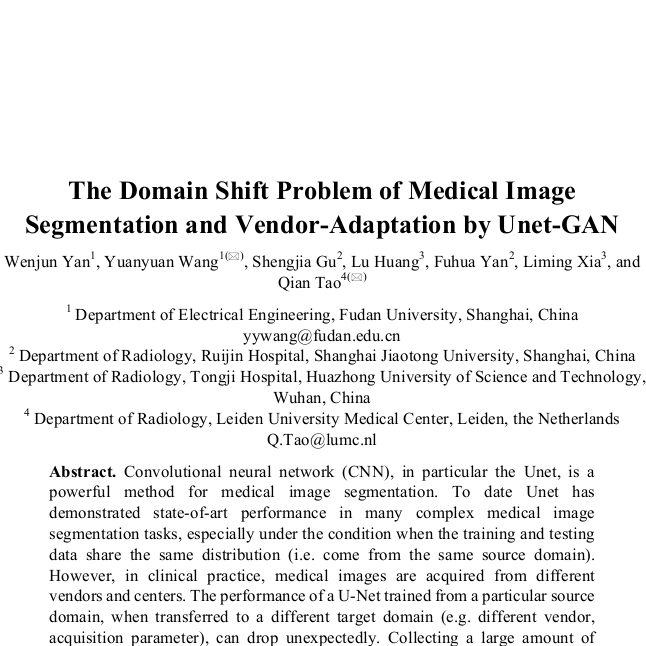
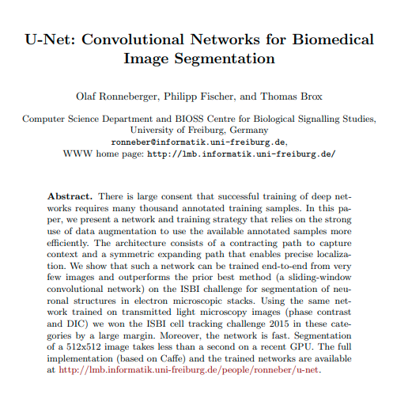
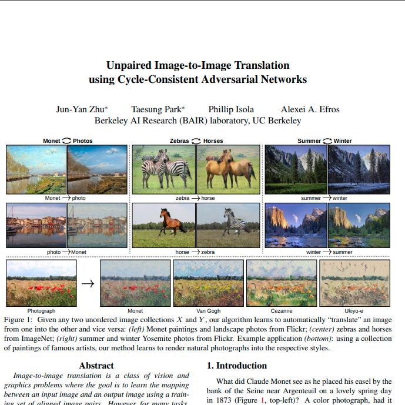
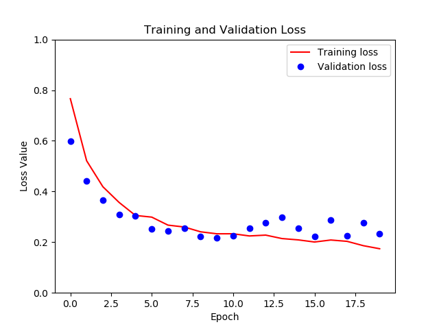
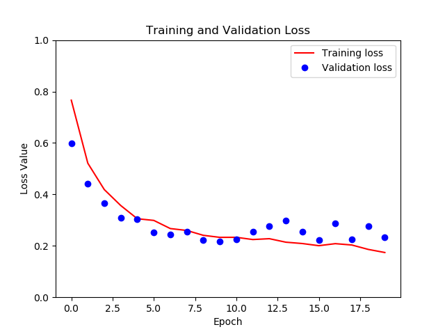

Unet, is a powerful method for medical image segmentation. To date Unet has demonstrated state-of-art performance in many complex medical image segmentation tasks, especially under the condition when the training and testing data share the same distribution (i.e. come from the same source domain). However, in clinical practice, medical images are acquired from different domains/vendors and centers. The performance of a U-Net trained from a particular source domain, when transferred to a different target domain (e.g. different vendor, acquisition parameter), can drop unexpectedly. Collecting a large amount of annotation from each new domain to retrain the U-Net is expensive, tedious, and practically impossible.1 Our project aims to conduct the following experiments
(1) Address the domain shift problem in Unets by analyzing and comparing the performance of Unets over different domains/vendors
(2) Design an unpaired generative adversarial network (GAN) for vendor-adaptation, and then perform segmentation. We have used Prostate central gland and peripheral zone images as our dataset in our experiments where two different modalities( T2, ADC) served as different domains, the methodology can be extended to medical images segmentation in general.
2. Procedure
2.1 Data
The experiments involved, Prostate central gland and peripheral zone images dataset.
Since the dataset is multimodal, the two different MR modalities namely T2 and ADC were used as training/source and testing/target domains respectively.
Our dataset can be summarized as follows:
Size: 48 4D volumes (32 Training + 16 Testing)
Source: Radboud University, Nijmegen Medical Centre
Challenge: Segmenting two adjoint regions with large inter-subject variations
NOTE:
The datset used in the original paper(i.e the paper we are replicating1),
SCMR Consensus Contour Data was different and had medical data privacy issues. Due to lack of authorization necessary to handle such kind of data we decided to go with this one.
2.2 Methods
2.2.1 Unet
We used adaptive moment estimation (Adam) optimization with learning
rate of..... and a mini-batch size of..... The number of epochs was set T
2.2.2 GAN
We used adaptive moment estimation (Adam) optimization with learning
rate of..... and a mini-batch size of..... The number of epochs was set To
2.2.3 Experiments
We performed comparative experiments to evaluate the performance in three scenarios:
1) Segment data of the target domain directly by Unet trained on the source
domain
2) Segment data of the source domain by Unet trained on the source domain
3)
1. Wenjun Yan and Yuanyuan Wang.:”The Domain Shift
Problem of Medical Image Segmentation and Vendor-Adaptation by Unet-GAN.”arXiv:1910.13681v1.

For understanding Unet
2. Olaf Ronneberger, Philipp Fischer, and Thomas Brox.:”U-Net: Convolutional Net-
works for Biomedical Image Segmentation.” arXiv:1505.04597v1.

For understanding Cycle-GAN
3. Jun-Yan Zhu and Taesung Park.:”Unpaired Image-to-Image Translation using
Cycle-Consistent Adversarial Networks.” arXiv:1703.10593.

Additional Code References used for Implementation
Jun-Yan Zhu and Taesung Park.:”Unpaired Image-to-Image Translation using
Cycle-Consistent Adversarial Networks.” arXiv:1703.10593.
5. Analysis
5.1 Observations
The experiments involved short-axis steady-state free precession (SSFP) cine MR
images of 144 subjects acquired by three major MRI machines as three domains (44
Philips samples, 50 GE samples, 50 Siemens samples). Image size varied from 256×256
to 512×512 pixels. All images were rescaled to the same in-plane resolution of 1.5×1.5
mm. Cine MR and label images were cropped at the center to a size of 192×192 for
faster training and testing.
Ground truth annotation of the LV myocardium and blood pool were performed on
the cine MR images by experienced radiologists. The number of available annotated
images in each domain was 4823, 2084, and 2602 for Philips, GE, and Siemens,
respectively. Philips data was set as the source domain to train the LV-Unet. We
randomly selected 35 subjects out of 44 for training (3920 images) and the rest 9 for
testing (903 images). Siemens and GE were defined as the two target domains. To train
the Unet-GAN, we separated every domain into training/testing set: 3008/1815 for
Philips, 1680/924 for Siemens, and 1320/764 for GE.
5.2 Results
5.2.1 Unet
We used adaptive moment estimation (Adam) optimization with learning
rate of..... and a mini-batch size of..... The number of epochs was set T
5.2.2 GAN
We used adaptive moment estimation (Adam) optimization with learning
rate of..... and a mini-batch size of..... The number of epochs was set To
5.2.3 Experiments
We performed comparative experiments to evaluate the performance in three scenarios:
1) Segment data of the target domain directly by Unet trained on the clean source
domain (i.e. original data)
2) Segment data of the target domain by Unet trained on different domain
3) First translate data of the target domain by Unet-GAN to the source domain, then
segment the translated data by the LV-Unet trained on the clear source data.
The polluted Unet meant to evaluate how much systematic augmentation can address
the domain shift problem, in comparison to the proposed Unet-GAN. The performance
of LV segmentation was evaluated in terms of Dice overlap index between the ground
truth and the segmentation results.
 
